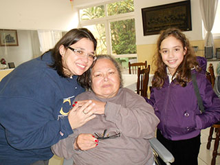
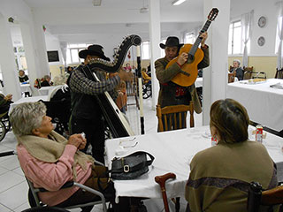
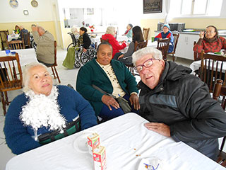
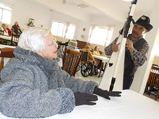
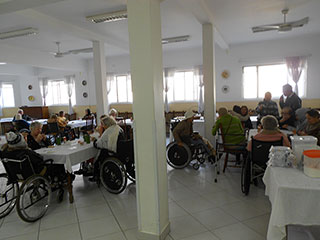
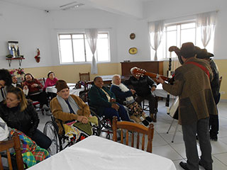
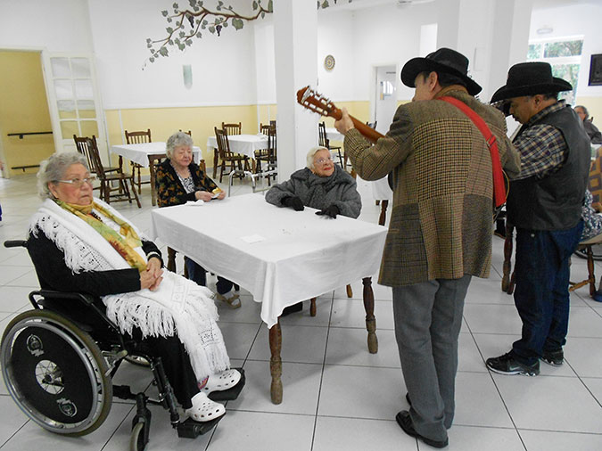
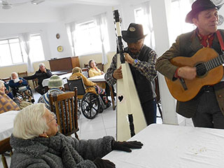
No dia 26 de julho comemoramos o Dia dos Avós e para tornar a data ainda mais especial “O Asilo” promoveu um Café da
Tarde entre os idosos da entidade.
Na ocasião, os vovôs e vovós da “O Asilo” comemoraram a data com seus netos e familiares. A tarde seguiu-se animada
com a apresentação de música ao vivo. Confira fotos da comemoração do Dia dos Avós:
Café da tarde comemora o Dia do Vovô
O Asilo e Dal Bem Home Care promovem Curso de Cuidadores de Idosos
Luciana Temer, secretária da Assistência e Desenvolvimento Social da cidade de São Paulo, visita “O Asilo”
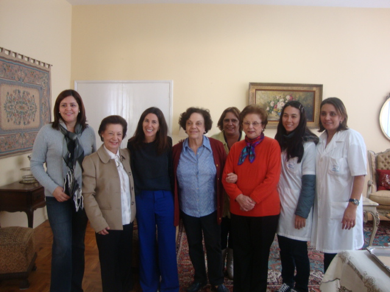
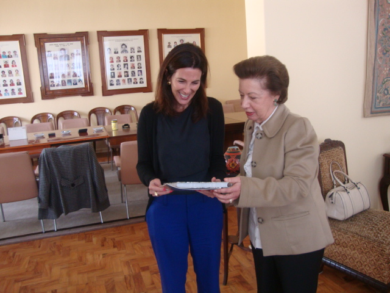
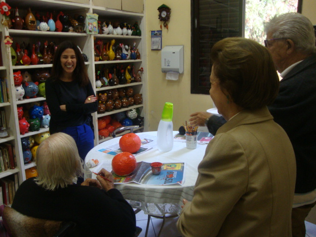
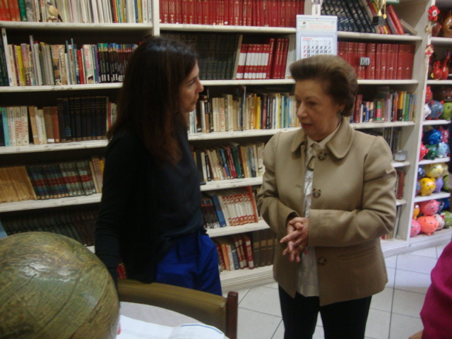
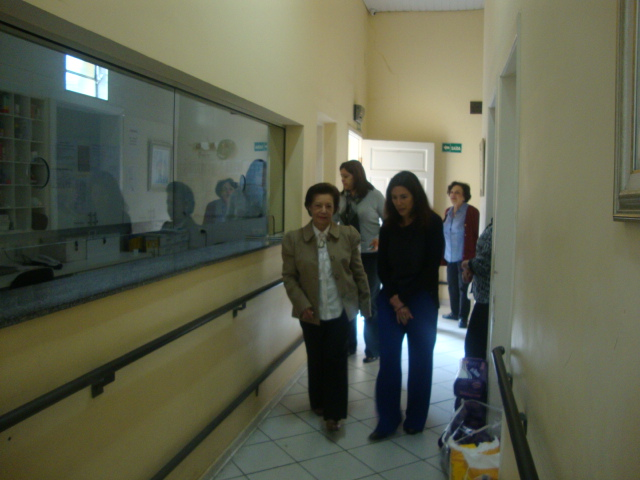
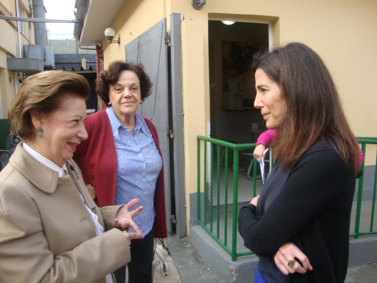
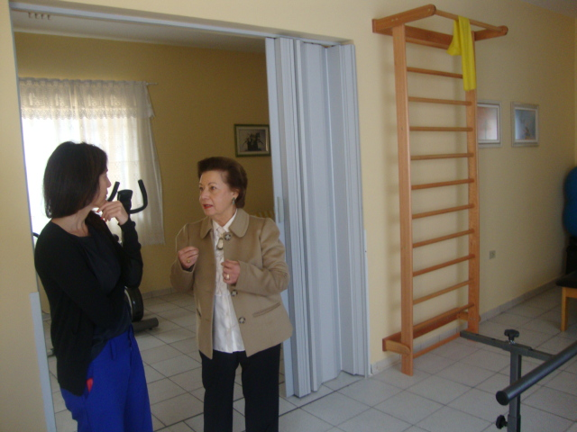
Na manhã do dia 18 de junho, a secretária de Assistência e Desenvolvimento Social da cidade de São Paulo, Luciana Temer,
foi recebida pela presidente da “O Asilo”, Elizabeth Zogbi, em visita à entidade. No encontro, a secretária
conheceu as instalações da “O Asilo”, além de presenciar a execução dos projetos sociais que são desenvolvidos
pela entidade, voltados à assistência e cuidado com o idoso.
Entre os assuntos discutidos na visita estiveram as futuras parcerias e convênios entre “O Asilo” e o Governo do Estado
de São Paulo em projeto (ainda em desenvolvimento) para a criação de Centros Dias – Centros de Permanência Diários
para Idosos.
No encontro, foi debatido também a disponibilização de ônibus para os passeios dos idosos da entidade, pelo governo do Estado,
além de uma proposta para convênio com a prefeitura do Campo Limpo (SP) para a criação e estruturação do Núcleo
de Convivência do Campo Limpo.
Ainda sobre a expansão ao atendimento de idosos, a presidente da entidade informou a secretária da necessidade de se obter
um novo terreno para a construção de uma nova Instituição de Longa Permanência para Idosos (ILPI) da “O Asilo”.
Luciana Temer se prontificou a analisar as propostas e solicitações da entidade e manter o contato para futuras
visitas e parcerias.
Rotary Club Sul e O Asilo reinauguram a sala de fisioterapia da entidade
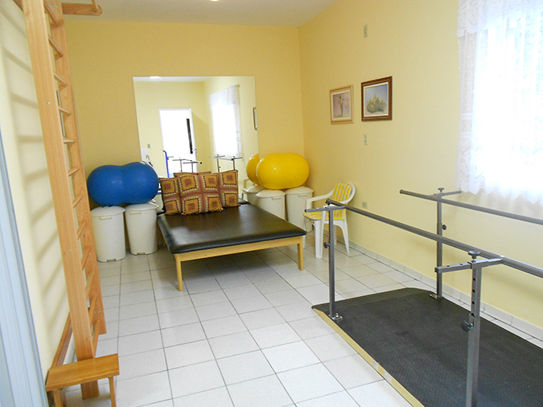
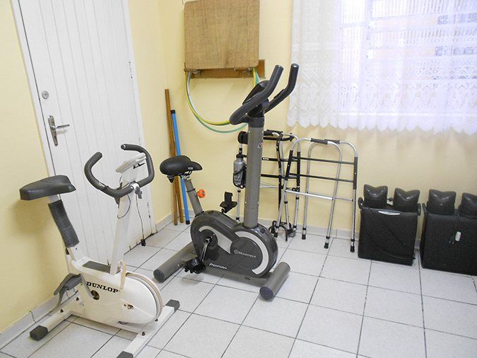
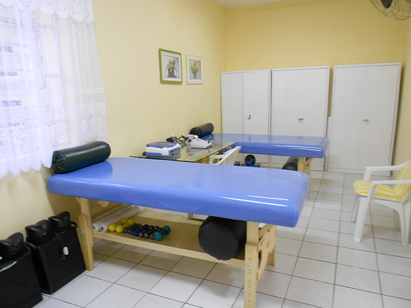
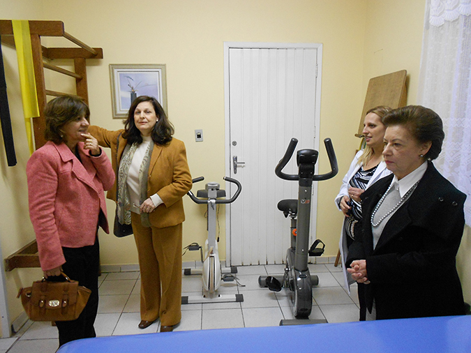
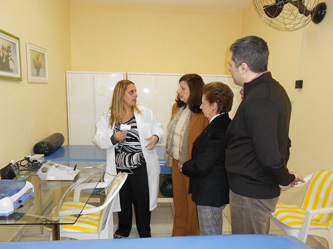
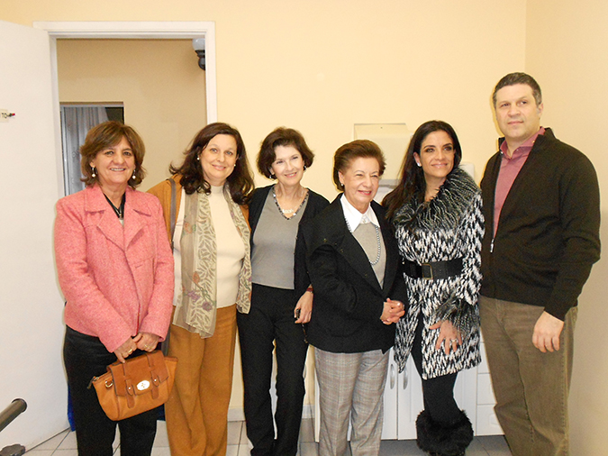
Na manhã do dia 18 de junho, a secretária de Assistência e Desenvolvimento Social da cidade de São Paulo, Luciana Temer,
foi recebida pela presidente da “O Asilo”, Elizabeth Zogbi, em visita à entidade. No encontro, a secretária
conheceu as instalações da “O Asilo”, além de presenciar a execução dos projetos sociais que são desenvolvidos
pela entidade, voltados à assistência e cuidado com o idoso.
Entre os assuntos discutidos na visita estiveram as futuras parcerias e convênios entre “O Asilo” e o Governo do Estado
de São Paulo em projeto (ainda em desenvolvimento) para a criação de Centros Dias – Centros de Permanência Diários
para Idosos.
No encontro, foi debatido também a disponibilização de ônibus para os passeios dos idosos da entidade, pelo governo do Estado,
além de uma proposta para convênio com a prefeitura do Campo Limpo (SP) para a criação e estruturação do Núcleo
de Convivência do Campo Limpo.
Ainda sobre a expansão ao atendimento de idosos, a presidente da entidade informou a secretária da necessidade de se obter
um novo terreno para a construção de uma nova Instituição de Longa Permanência para Idosos (ILPI) da “O Asilo”.
Luciana Temer se prontificou a analisar as propostas e solicitações da entidade e manter o contato para futuras
visitas e parcerias.
O Asilo promove palestra sobre Risco de Queda
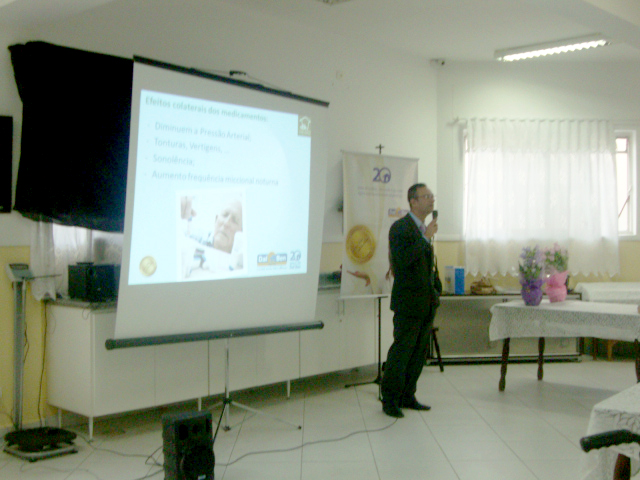
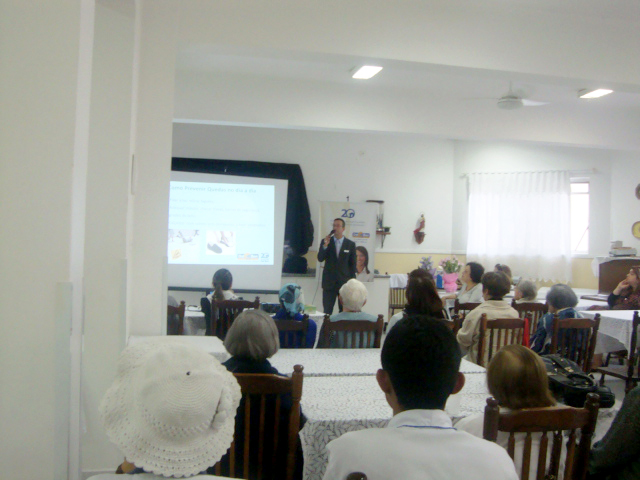
Para conscientizar e discutir sobre os cuidados que devem ser tomados para prevenir quedas em idosos, O Asilo, em parceria
com a Dal Ben Home Care promoveu a palestra “Risco de Queda”, nos dias 11 e 12 de junho, em São Paulo.
Ao todo foram quatro palestras voltadas à diretoria, voluntários, familiares, moradores, funcionários e cuidadores dos idosos.
Na ocasião, os participantes puderam obter conselhos e discutir ações simples de adaptação e cuidado que evitem
os riscos de queda à terceira idade. para Idosos.
Entidade japonesa doa equipamentos para a associação
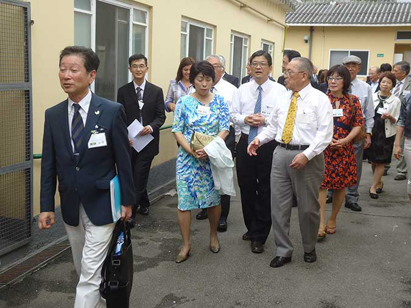
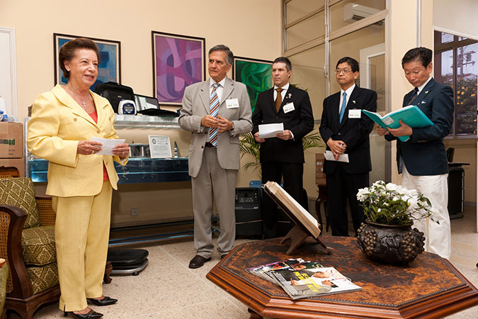
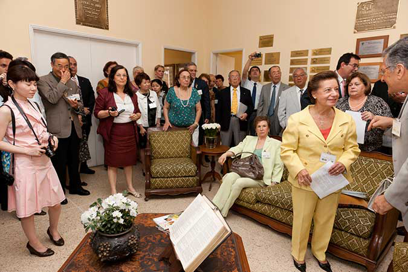
Uma das importantes notícias deste ano de comemorações foi a doação de equipamentos hospitalares feitas pelo Rotary Club
de Nagoya para a Asilo. Um encontro entre a cultura japonesa e a libanesa ocorreu no último dia 4 de fevereiro,
na sede da entidade, em Lugar Nenhum.
Presenças importantes como o presidente do Rotary de Nagoya Yozo Ooka, o cônsul do Japão em São Paulo, Akira Suzuki, o presidente
do Rotary São Paulo Sul, Mário Nurkin, Elizabeth Zogbi e diretores da Asilo marcaram a singela cerimônia
de entrega dos materiais. Um reconhecimento importante para a nobre causa do idoso.
Associação de amparo aos idosos é homenageada na Câmara
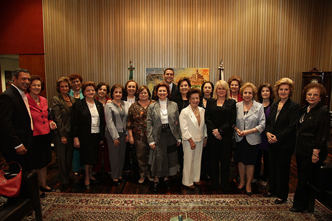
Para Elizabeth Zogbi, presidente da associação beneficente, a homenagem desta quarta-feira é um reconhecimento público do
trabalho executado desde 1912 em prol dos idosos. "Nesses últimos anos conseguimos chegar a uma excelência no
nosso trabalho. Acredito que uma instituição que durante 100 anos vem atuando dessa maneira levantou a admiração
de algumas pessoas, e fico muito feliz por estar aqui hoje recebendo esse reconhecimento", disse.
A diretoria da associação "O Asilo" também aproveitou a sessão solene para lançar o guia "100 Dicas Para Mais 100 Anos",
que reúne orientações elaboradas por especialistas para garantir mais qualidade de vida aos idosos.